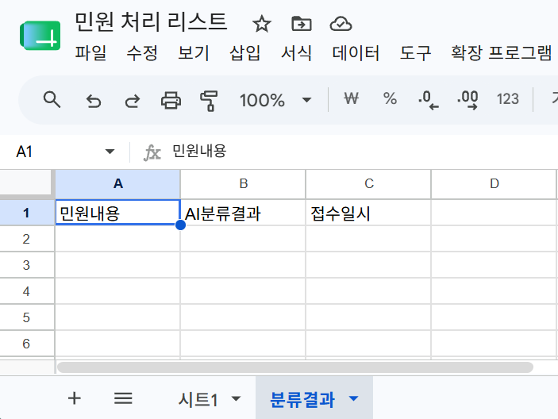
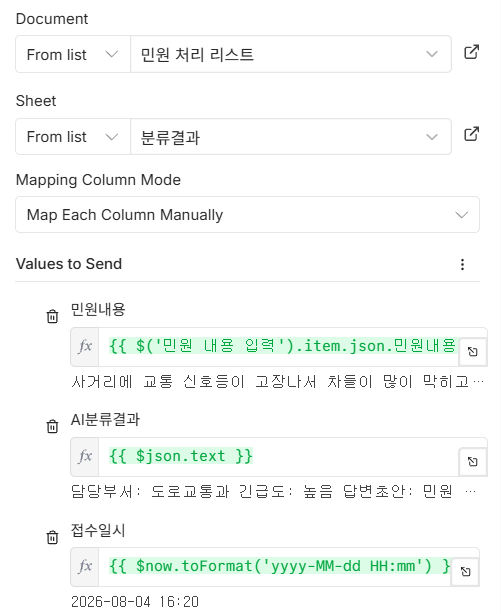

P3 AI 민원 분류와 결재
AI가 초안을 쓰고, 사람이 승인해야 발송됩니다
왜 이게 필요한가
- 민원이 한 건 들어오면 담당자가 하는 일: 담당 판단(어느 과 일인가) → 긴급도 판단(얼마나 급한가) → 답변 작성(정중한 답변 초안)
- 앞의 두 가지는 판단이고 마지막은 글쓰기지만, 셋 다 AI가 초벌로 해낼 수 있음 — 중요한 건 AI가 결정하는 게 아니라 초안을 낸다는 점
- 해결: 민원을 접수하면 AI가 담당부서·긴급도·답변초안 세 가지를 한 번에 만들어 시트에 남김 — 민원 원문 옆에 AI 초안이 나란히 쌓임
- 하지만 AI 초안을 그대로 보낼 수는 없음 — 그래서 담당자가 메일의 승인 버튼을 눌러야만 민원인에게 답변이 나가도록 결재 단계를 둠
이번 시간에 만들 것
폼으로 접수된 민원을 AI가 담당부서와 긴급도로 분류하고 답변 초안까지 작성합니다. 그 뒤 두 갈래로 나뉩니다.
- 위 갈래 — 민원 원문과 함께 시트에 기록
- 아래 갈래 — 담당자에게 결재 요청 메일 발송 → 승인하면 답변 초안을 민원인에게 발송
분류결과 탭 추가(1단계에서 진행)
결재 요청의 받는 사람을 본인 주소로 해도 되지만, 짝과 주소를 바꿔 서로의 결재자가 되면
"내가 올린 건을 옆 사람이 승인해 주는" 실제 결재 흐름을 그대로 체험할 수 있습니다.
AI 분류·답변에서 선이 두 갈래로 나뉘는 모습위 갈래에서는 두 곳의 값을 동시에 씀 — AI 분류 결과와 폼의 민원 원문
따라하기
- 시트에 분류결과 탭 만들기
1일차 시트 맨 아래 탭줄에서
+→ 탭 이름분류결과로 변경1행에 세 칸 순서대로:
민원내용·AI분류결과·접수일시[그림 P3-2] 1행 A·B·C에 머리글 세 개를 넣은분류결과탭
- 새 워크플로우 만들기
이름을
P3 AI 민원 자동 분류로 - 폼 트리거 추가하기
Form Title→민원 내용 입력
Form Description→분류할 민원 내용을 입력하세요.필드 두 개:
이메일은 승인 뒤 답변을 받을 민원인 주소입니다. 실습에서는 본인 주소를 넣으면 됩니다.Label=민원내용(띄어쓰기 없이),Element Type=Textarea, 필수 켜기
Label=이메일,Element Type=Email, 필수 켜기 - AI 분류 노드 추가하기
+→Basic LLM Chain→Source for Prompt=Define below당신은 민원 분류 담당 공무원입니다. 아래 민원 내용을 읽고 다음을 작성하세요. 1) 담당부서: [도로교통과 / 환경위생과 / 복지정책과 / 건축과 / 기타] 중 하나 2) 긴급도: [높음 / 보통 / 낮음] 중 하나 3) 답변초안: 민원인에게 보낼 정중한 답변 초안 (3~4문장, 존댓말) 아래 형식 그대로만 출력하세요. 담당부서: 긴급도: 답변초안: [민원 내용] {{ $json.민원내용 }}"형식 그대로만 출력하세요"가 중요한 이유 — 없으면 AI가 인사말·설명을 덧붙여 시트가 지저분해짐 - Gemini 모델 붙이고 모델 이름 고르기
아래쪽
+→Google Gemini Chat Model→ 자격증명 재사용 →models/gemini-2.5-flash직접 선택 - 시트 기록 노드 추가하기
+→Google Sheets→Append Row in SheetDocument= 1일차 시트,Sheet=분류결과탭Mapping Column Mode=Map Each Column Manually - 세 칸 채우기 — 이번 시간의 핵심
세 칸 각각 표현식 전환 후:
민원내용→{{ $('민원 내용 입력').item.json.민원내용 }}
AI분류결과→{{ $json.text }}
접수일시→{{ $now.toFormat('yyyy-MM-dd HH:mm') }}왜 첫 칸만 다른가AI 분류·답변노드를 지나면 민원 원문이 사라짐.$('민원 내용 입력')로 몇 칸 앞 노드의 값을 이름으로 직접 불러옴. 노드 이름 철자가 한 글자라도 다르면 실패.[그림 P3-3] 세 칸 모두fx가 붙고, 칸 아래 회색 글씨로 실제 들어갈 값이 미리 보입니다
- 결재 요청 메일 — 두 번째 갈래
AI 분류·답변노드 오른쪽 끝의 동그란 점을 잡고 빈 곳으로 끌어 놓은 뒤Gmail을 고릅니다.Operation은Send message and wait for response입니다.To→ 결재자 이메일 (본인 또는 짝)
Subject→[결재 요청] 민원 답변 초안
Message→ 표현식 모드로 아래민원 내용: {{ $('민원 내용 입력').item.json.민원내용 }} AI 분류·답변 초안: {{ $json.text }} 아래 [Approve]를 누르면 답변 초안이 민원인에게 발송됩니다. 수정이 필요하면 [Disapprove]를 누르세요.Response Type→Approval, 그 아래Type of Approval→Approve and Disapprove이 노드가 하는 일 메일을 보낸 뒤 멈춰서 기다립니다. 받는 사람이 메일의Approve또는Disapprove버튼을 누르면 그 선택이 결과(approved: 참 또는 거짓)로 나오며 워크플로우가 이어집니다. 그동안 실행은 끝나지 않고 이 노드에서 기다리는 상태로 남습니다.[그림 P3-4] 받은편지함에 도착한 결재 요청 메일 —Approve·Disapprove버튼캡처 위치: 받은편지함에서 연 [결재 요청] 메일. 민원 내용, AI 초안, 두 개의 버튼이 함께 보이는 화면 - 승인했는지 갈라 보기
결재 요청오른쪽+→If. 1일차 07강과 같은 노드입니다.왼쪽 값 → 표현식 모드로
승인({{ $json.data.approved }}
비교 방식 →Boolean›is truetrue) 쪽 출력에만 다음 노드를 연결합니다. 반려(false) 쪽은 비워 두면 그냥 끝납니다. - 승인되면 민원인에게 답변 보내기
If의 true 출력 오른쪽+→Gmail→Send a message.To→ 표현식 모드로{{ $('민원 내용 입력').first().json.이메일 }}
Subject→민원 답변 안내
Email Type→Text
Message→ 표현식 모드로 아래{{ $('AI 분류·답변').first().json.text.split('답변초안:').pop().trim() }}이 식 읽는 법 AI 결과는담당부서: … 긴급도: … 답변초안: …한 덩어리입니다..split('답변초안:')은 그 글자를 기준으로 덩어리를 둘로 자르고,.pop()은 뒤쪽 조각(답변)만 집고,.trim()은 앞뒤 빈칸을 지웁니다. 민원인에게는 답변 부분만 나갑니다.여기서는.item대신.first()를 씁니다 결재 요청 노드는 중간에 멈췄다 이어지기 때문에, 이 구간을 지나면 n8n이 "어느 항목에서 이어졌는지"를 잃어버립니다. 그래서.item이 실패합니다. 이 워크플로우는 한 번에 민원 한 건만 흐르니.first()(첫 번째 항목)로 불러오면 됩니다. - 노드 이름 정리하기
폼 트리거와민원 내용 입력·AI 분류·답변·분류 결과 기록·결재 요청·승인됐나?·답변 발송AI 분류·답변이름은 바꾸지 마세요 — 뒤 단계 표현식이 이 이름을 가리킵니다.
실행하고 확인하기
Execute workflow→ 임시 폼 주소에서 민원 내용 제출분류결과탭에 새 줄: 민원 원문 + AI 분류 결과 + 오늘 날짜시각 = 위 갈래 성공- 결재자 메일함에
[결재 요청] 민원 답변 초안메일이 오고, 캔버스의결재 요청노드가 기다리는 중으로 표시됨 - 메일에서
Approve를 누르면 → 몇 초 뒤 민원인(폼에 적은 이메일)에게민원 답변 안내메일이 도착 = 아래 갈래 성공 - 서로 다른 민원을 몇 번 더 제출해 담당부서가 달라지는지 확인
이번에는 Disapprove를 눌러 보세요. 승인됐나? 노드의 거짓 쪽으로 빠지고 아무 메일도 나가지 않습니다.
AI가 쓴 초안이 마음에 들지 않을 때 이렇게 멈출 수 있다는 것이 결재 단계의 존재 이유입니다.
안 될 때
- 민원내용 칸이 비어 있음 —
{{ $('민원 내용 입력').item.json.민원내용 }}인지, 폼 트리거 이름이 정확한지 확인 - "노드를 찾을 수 없다" 오류 —
$('...')안 이름과 실제 노드 제목 일치 확인 - 칸이 전부 비어 있음 — 세 칸 각각 표현식 전환 확인
- 값이 엉뚱한 칸에 들어감 —
분류결과탭 머리글 철자 확인 - AI 결과에 인사말 잔뜩 — 프롬프트의 "형식 그대로만 출력하세요" 줄 확인
- Sheet 목록에 분류결과 탭 안 보임 — 브라우저 새로고침 후 재확인
- 결재 메일이 안 옴 —
결재 요청의To주소와 스팸함 확인. Gmail 자격증명이 같은 계정인지도 확인 - Approve를 눌러도 아무 일도 없음 — 캔버스에서 해당 실행이 아직 기다리는 중인지 확인하고, 이미 끝났거나 시간이 많이 지났다면 민원을 처음부터 다시 제출
- 답변 발송에서 "Paired item data unavailable" 같은 오류 —
.item을 썼기 때문입니다..first()로 바꾸세요 - 답변 메일에 담당부서·긴급도까지 같이 나감 —
.split('답변초안:')의 글자가 AI 결과의 표제와 정확히 같은지 확인(콜론 포함)
확인 문제
객관식Q1. {{ $('민원 내용 입력').item.json.민원내용 }} 표현식이 필요한 이유는?
- 시트 자격증명 문제 때문에
AI 분류·답변노드를 지나면서 민원 원문이 사라졌기 때문에- 폼 필드 이름이 한글이라서
- 표현식은 항상 이 형태로 써야 하기 때문에
정답 확인
정답: ② $('노드 이름')으로 몇 칸 앞 노드의 값을 이름으로 직접 불러올 수 있습니다.
객관식Q2. 프롬프트에 "아래 형식 그대로만 출력하세요"를 넣는 이유는?
- AI 응답 속도를 높이기 위해
- 인사말·설명이 붙지 않게 해 시트에 깔끔하게 쌓기 위해
- 긴급도를 자동으로 계산하기 위해
- 자격증명 오류를 막기 위해
정답 확인
정답: ② 이 문장이 없으면 AI가 인사말이나 부가 설명을 붙여 시트가 지저분해집니다.
단답형Q3. $('민원 내용 입력')이 정상 동작하려면 어떤 조건이 지켜져야 하나요?
정답 확인
정답: 폼 트리거 노드의 제목이 정확히 민원 내용 입력이어야 합니다 — 철자가 한 글자라도 다르면 실행이 실패합니다.
객관식Q4. 결재 요청 메일에서 Disapprove를 누르면 어떻게 되나요?
- 민원인에게 답변이 그대로 발송된다
- 워크플로우가 오류로 멈춘다
승인됐나?의 거짓 쪽으로 빠지고, 연결된 노드가 없으면 아무 메일도 나가지 않는다- AI가 답변을 다시 쓴다
정답 확인
정답: ③ 반려는 오류가 아니라 "거짓"이라는 정상적인 결과입니다. 거짓 쪽에 노드를 이으면 반려 사유 기록 같은 일도 시킬 수 있습니다.
이번 프로젝트 워크플로우 받기
따라오다 막혔다면 이 파일을 받아 n8n에서 불러오면 이어서 진행할 수 있습니다.
Google Gemini Chat Model·분류 결과 기록·
결재 요청·답변 발송 네 노드를 각각 열어
자격증명을 다시 골라야 합니다. 그리고 두 자리표시자를 본인 값으로 바꿔야 합니다.
분류 결과 기록의 Document →
여기에_본인_시트_ID(본인 시트)
결재 요청의 To →
본인이메일@example.com(결재자 주소)
분류결과로 들어 있으니,
시트에 그 이름의 탭과 머리글 세 개를 먼저 만들어두어야 합니다.